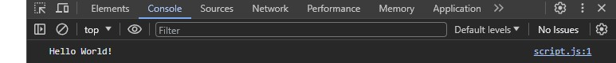

Motivation
Die Frage, warum Personen, die Medienkonzeption studieren, auch programmieren lernen
sollten, gehört zu den häufigsten Fragen. Obwohl die Inhalte allein völlig ausreichend sind, um dies
zu begründen - da du dich dazu entschlossen hast, in einem digitalen Beruf eine Position
anzustreben, die später grundsätzlich über die Umsetzung bestimmt, und du somit auch die Inhalte
zumindest kennen sollten - möchte ich hier vor allem einen anderen Aspekt ansprechen: die
Begeisterung, Geschichten zu erzählen.
Das Geschichtenerzählen liegt im Blut der meisten von uns, egal ob Studierende oder nicht. Die Art der
Geschichte ist zumeist nur sehr unterschiedlich, und das ist auch sehr gut so. Während der Begriff des
Künstlers sehr offen ist, haben viele von uns das Verlangen, Dinge zu erschaffen. Die Begeisterung,
wenn etwas so funktioniert, wie es soll; das Schreiben eines Buches, welches andere Menschen
begeistert; die Produktion von Musik, die Emotionen und Gefühle zum Ausdruck bringt; ein spannender
Film, der z.B. Missstände aufzeigt oder einfach nur unterhält; oder ein Spiel, welches die Menschen
fordert und dazu aufruft, immer besser in dem zu werden, was sie tun. Das alles sind Geschichten, die
erzählt werden wollen, und hinter denen Menschen stehen, um andere auf irgendeine Art zu begeistern,
zu berühren.
Das Instrument der Programmierung ist hierbei eines der wichtigsten und besten Werkzeuge, da es
ermöglicht, alles nur Erdenkliche in die Realität umzusetzen. Dabei ist nicht nur logisches Denken,
sondern vor allem auch Kreativität und Pioniergeist gefragt. Auch wenn es mit diesen Worten schwierig
ist, dich davon zu überzeugen, dich diesem Thema zu öffnen, möchte ich zumindest einer anderen Person
das Wort geben, die es mit ihrer Poesie besser schafft, davon zu überzeugen. Ich hoffe, dass du
sowohl dem folgenden Video als auch der Programmierung eine Chance gibst, zu zeigen, was
dahintersteckt.
The poetry of
programming | Linda
Liukas
Einrichtung
Für den Start in die Welt der Programmierung mit JavaScript müsst ihr als erstes eine
Script-Datei
erstellen. Ähnlich wie ihr das bei CSS gemacht habt, erstellt ihr hierfür eine neue JS-Datei in eurem
Ordner (z.B. script.js). Anschließend müsst ihr diese Datei in eurem HTML einbinden, was ihr mit einem
Script-Tag bewerkstelligt:
Wenn ihr nun die HTML-Datei im Browser öffnet, könnt ihr im Entwickler-Tool (Rechtsklick -> Inspect) die Konsole öffnen und dort die Ausgabe sehen.

Variabeln
Eine Variable ist ein Speicherplatz für einen definierten Wert.
In einer Variable können Werte
gespeichert werden, die sich im Laufe des Programms ändern können.
Um eine Variable zu schreiben benötigt ihr als erstes das Schlüsselwort "let" oder "const" gefolgt von
einem Wert. Dieser Wert kann alles sein. Eine Zahl, ein String, ein Boolean, ein Array, ein Objekt, eine
Funktion, ein HTML-Element etc. Ihr werdet alle Begriffe im Laufe des Kurses kennenlernen
Das Schlüsselwort "let" wird verwendet, wenn sich der Wert der Variable ändern kann während es sich bei
einer Variable mit dem Schlüssel "const" um eine unveränderliche Variable handelt. Üblicherweise auch bei
Werten, die sich nicht ändern sollen oder können. Euer Geburtstag ist als Beispiel immer gleich und nie
veränderlich während euer Alter sich verändern kann.
Beispiele:
Der String "Max Mustermann" wird in der Variable "name" gespeichert.
Die Number 20 wird in der Variable "alter" gespeichert.
Der Boolean true wird in der Variable "istStudent" gespeichert.
alter = 21;
Die Number 20 wird in der Variable "alter" gespeichert.
Anschließend wird der Wert der Variable "alter" auf 21 geändert.
if-Bedingung
if-Bedingungen sind eine Möglichkeit, um zu überprüfen, ob eine Bedingung erfüllt ist.
Beispiel:
let age = 20;
if (age < 20) {
console.log("You are younger than 20");
} else if (age == 20) {
console.log("You are 20 y.o");
} else {
console.log("You are older than 20");
} In diesem Beispiel wird der Wert 20 in der Variable "age" gespeichert.
Diese Variable wird nun in mehrern Schritten überprüft.
Zuerst wird überprüft, ob der Wert kleiner als 20 ist, wenn ja wird der Text "You are younger than 20"
ausgegeben.
Wenn der Wert nicht kleiner als 20 ist, wird überprüft, ob der Wert gleich 20 ist, wenn ja wird der Text
"You are 20 y.o" ausgegeben.
Wenn der Wert weder kleiner noch gleich 20 ist, wird mit "else" automatisch angenommen, dass age größer
als 20 ist
Funktionen
Funktionen sind vordefinierte Programmierbereiche, die immer genau dann ausgeführt werden, wenn ihr es
wollt. Dabei können Funktionen auch Parameter annehmen (quasi Variabeln) und nach dem durchlauf einen
Wert zurückgeben.
Stellt euch eine Funktion wie eine Maschine vor. In diese Maschine gebt ihr nun
Zutaten oder Ressourcen. Was genau diese Maschine macht, definiert ihr selbst, und am Ende kommt ein
veredeltes Produkt heraus.

Aufbau:
function name(parameter) {
// Programmcode
} In diesem Beispiel wird eine Funktion mit dem Namen "name" definiert.
Diese Funktion nimmt einen Parameter entgegen, der in der Funktion mit "parameter" angesprochen
werden kann.
In der Funktion wird nun der Programmcode ausgeführt.
Wichtig hierbei ist, dass eine Funktion immer aufgerufen werden muss, da sie sonst nicht ausgeführt wird.
Beispiel:
function sayHello() {
console.log("Hello World");
}
sayHello(); In diesem Beispiel wird eine Funktion mit dem Namen "sayHello" definiert.
Diese Funktion nimmt keinen Parameter entgegen.
In der Funktion wird nun der Text "Hello World" in der Konsole ausgegeben.
Anschließend wird die Funktion aufgerufen. Erst durch diesen Aufruf wird die Funktion und der
Programmcode innerhalb der Funktion ausgeführt
Parameter und Ausgabe
Beispiel:function add(a, b) {
return a + b;
}
console.log(add(1, 2));
In diesem Beispiel wird eine Funktion mit dem Namen "add" definiert.
Diese Funktion nimmt zwei Parameter entgegen, die in der Funktion mit "a" und "b" angesprochen werden
können.
In der Funktion wird nun der Wert von "a" und "b" addiert und mit "return" zurückgegeben.
Anschließend wird die Funktion mit den Parametern 1 und 2 aufgerufen.
Das Ergebnis (3) der Funktion wird nun in der Konsole ausgegeben.
Die Bezeichnungen der Parameter (in diesem Beispiel a und b) ist euch überlassen und sollte wie
gewöhnlich das repräsentieren was der Parameter darstellt. In diesem Beispiel wäre anstatt a und b somit
numberA und numberB repräsentativer
function add(numberA, numberB) {
return numberA + numberB;
}
console.log(add(1, 2));
Wichtig ist jedoch, dass beim Aufruf einer Funktion - die Parameter enthält - diese Parameter auch
übergebe werden müssen. die Aufruf kann also nicht add(1); oder add(1,3,5); sein.
Eine Funktion muss keinen Parameter entgegennehmen und auch keinen Wert zurückgeben.
function sayHello() {
console.log("Hello World");
}
sayHello();
In diesem Beispiel wird eine Funktion mit dem Namen "sayHello" definiert.
Diese Funktion nimmt keine Parameter entgegen.
In der Funktion wird nun der Text "Hello World" in der Konsole ausgegeben.
Der Aufruf einer Funktion kann auch in einer Variable gespeichert werden.
Beispiel:
function add(a, b) {
return a + b;
}
let result = add(1, 2);
console.log(result);
In diesem Beispiel wird eine Funktion mit dem Namen "add" definiert.
Diese Funktion nimmt zwei Parameter entgegen, die in der Funktion mit "a" und "b" angesprochen werden
können.
In der Funktion wird nun der Wert von "a" und "b" addiert und mit "return" zurückgegeben.
Anschließend wird die Funktion mit den Parametern 1 und 2 aufgerufen und das Ergebnis in der Variable
result gespeichert, und mit einem console.log() ausgegeben. Die Aussgabe kann auch in andere Bereiche
gespeichert werden, so könnte man auch eine if-Bedingung aufrufen und als Bedingung eine Funktion
aufrufen, die entweder "true" oder "false" ausgibt
Beispiel:
function isAdult(age) {
if (age >= 18) {
return true;
} else {
return false;
}
}
let result = isAdult(20);
console.log(result);
In diesem Beispiel wird eine Funktion mit dem Namen "isAdult" definiert.
Diese Funktion nimmt einen Parameter entgegen, der in der Funktion mit "age" angesprochen werden kann.
In der Funktion wird nun überprüft, ob der Wert von "age" größer oder gleich 18 ist.
Wenn der Wert größer oder gleich 18 ist, wird mit "return" der Wert "true" zurückgegeben.
Wenn der Wert kleiner als 18 ist, wird mit "return" der Wert "false" zurückgegeben.
Anschließend wird die Funktion mit dem Parameter 20 aufgerufen und das Ergebnis in der Variable result
gespeichert, und mit einem console.log() ausgegeben.
Beispiel:
function isAdult(age) {
if (age >= 18) {
return true;
} else {
return false;
}
}
if (isAdult(20)) {
console.log("You are an adult");
} else {
console.log("You are not an adult");
}
In diesem Beispiel wird in der If-Bedingung direkt eine Funktion aufgerufen, die entsprechend dem Alter ein "true" oder "false" ausgibt.
Übungen
Collatz-Problem
Schreiben Sie ein Programm, welches die Collatz-Folge für eine beliebige Zahl n (natürliche Zahl > 0) berechnet, und die jede Zahl der Zahlenfolge in der Konsole ausgibt. Die Collatz-Folge ist eine Folge von Zahlen, die durch folgende Regeln definiert ist:
- Wenn die Zahl gerade ist, teilen Sie sie durch 2.
- Wenn die Zahl ungerade ist, multiplizieren Sie sie mit 3 und addieren 1 hinzu.
- Wenn die Zahl 1 ist, ist die Folge beendet.
Wenn somit die Zahl 7 der Funktion übergeben wird, wirft diese mehrere Zahlen in der Konsole (console.log()) aus, bis die 1 erreicht wurde, dann hört die Funktion auf.
Beispiel: Die Collatz-Folge für die Zahl 7 ist:
7 22 11 34 17 52 26 13 40 20 10 5 16 8 4 2 1
Collatz auf Wikipedia
Lösungsansätze
-
Die Funktion soll die Zahlenfolge berechnen, nachdem Sie die Startzahl (n) übergeben haben. Entsprechend ist ein Parameter wichtig
-
Zu Ausgabe jeder Zahlfolge ist eine console.log() nötig, natürlich lässt es sich auch als HTML erstellen. Je nachdem ist es wichtig, ob deine Funktion einen Rückgabewert hat oder nicht
-
Die Funktion muss Bedingungen abfragen (if/else). Die Zahlenfolge endet immer mit: "4 2 1. Somit muss bei 1 etwas anderes passieren als bei einer ungerade oder geraden Zahl
-
Suche eine Möglichkeit, damit das Programm herausfinden kann, ob die eingebeben Zahl gerade oder ungerade ist. (Tipp: Modulo)
-
Wenn die Zahlen 1 noch nicht erreicht wurde, ist die Zahlenfolge nicht zu Ende. Somit muss eine Möglichkeit gefunden werden, womit die Funktion erst aufhört zu arbeiten sobald die 1 gefunden wurde, und die entsprechenden Prozesse so lange wiederholt, bis eine 1 ergibt. Hierbei gibt es mehrere Ansätze, der einfachste wäre die sogenannte Rekursion. Heißt, dass die Funktion sich selbst aufruft: Rekursion auf Wikipedia
-
Bei der Verwerwendung der Rekursion muss immer darauf geachtet werde, dass das wiederaufrufen der eigenen Funktion irgendwann beendet wird.
Hier klicken um die Lösung angezeigt zu bekommen
Hinweis: Die Funktion ist rekursiv. Das heißt, dass diese Funktion sich selbst aufruft. Hierbei ist zu beachten, dass es auch einen Mechanismus geben muss, der den Prozess irgendwann beendet, so dass die Funktion sich nicht unendlich selbst aufruft.
Die Funktion im Ganzen:
function collatz(n: number): void {
console.log(n);
if(n == 1) {
console.log("End");
return;
}
if (n % 2 == 0){
collatz(n / 2);
} else {
collatz(3 * n + 1);
}
}
Die Funktion mit Kommentaren:
// Die Funktion nimmt die Zahl (number) n entgegen und wirft nichts zurück (void)
function collatz(n: number): void {
console.log(n);
// Die If-Bedingung prüft ob die Zahl 1 ist, dann endet die Collatz-Folge
if(n == 1) {
console.log("End");
// der return beendet die Funktion ohne etwas zurückzugeben.
// Hierdurch wird der Rest der Funktion unterhalb nicht ausgeführt
return;
}
// Die If-Abfrage prüft ob die Zahl gerade ist. Hier wird Modulo verwendet
// um den Rest zu erhalten. n Modulo 2 ergibt 0 wenn die Zahl gerade ist.
if (n % 2 == 0) {
// Falls die Zahl gerade ist, wird die selbe Funktion noch einmal aufgerufen
// und als Parameter n / 2 übergeben.
collatz(n / 2);
} else {
// Falls die Zahl ungerade ist, wird die selbe Funktion ebenfalls noch einmal aufgerufen
// und als Parameter 3 * n + 1 übergeben.
collatz(3 * n + 1);
}
}
Letzte praktische Endabgabe
Um zu erkennen, ob Sie die Inhalte verstanden haben können Sie hier die praktische Prüfung des letzten Semesters anschauen. Dies dient als Referenz für die Inhalte, die Sie in diesem Modul erlernen sollen. Außerdem können Sie hierdurch sehen wie eine solche praktische Prüfung aufgebaut ist.
Praktikum Endaufgabe SoSe22
Konzipieren und entwickeln Sie eine Sprachlern-App unter Berücksichtigung folgender Anforderungen:
- Zielgruppe sind deutschsprachige Nutzer, die Spanisch in einem Anfängerkurs lernen wollen.
- Beim Start des Kurses in der Sprachlern-App wird zunächst ein Satz auf Deutsch angezeigt (bspw.: "Ich heiße Gabriel").
- Ebenso werden die einzelnen Wörter der Übersetzung auf der zu erlernenden Sprache angezeigt, aber in einer zufälligen Reihenfolge (die Übersetzungswörter für oben genannten Satz in zufälliger Reihenfolge wären bspw.: "Gabriel" "llamo" "Me").
- Der Nutzer muss nun die übersetzten Wörter in der richten Reihenfolge anklicken. Der erste Klick muss auf das Wort an erste Stelle des übersetzten Satzes gesetzt werden, der zweite Klick auf das Wort an zweiter Stelle usw...
- Klickt der Nutzer ein Wort richtig an, dann gibt es einen Punkt, das Wort wird in einem Übersetzungsbereich angezeigt (bspw.: "Me"). Der Nutzer kann danach ein anderes Wort anklicken.
- Klickt der Nutzer wieder ein Wort richtig an, dann gibt es einen weiteren Punkt, das Wort wird ergänzend im Übersetzungsbereich angezeigt ("Me llamo"). Der Nutzer kann danach ein anderes Wort anklicken.
- Klick der Nutzer ein falsches Wort an, gibt es einen Punkt Abzug, im Übersetzungsbereich werden nur die bisher richtigen Wörter angezeigt.
- Das Punktekonto des Nutzers darf nicht in den Minusbereich gehen. Der aktuelle Punktestand ist für den Nutzer immer sichtbar.
- Sobald die Übersetzung vollständig ist wechselt die Anwendung zum nächsten Übungssatz.
- Wenn alle Übungssätze abgeschlossen wurden wird dem Nutzer der finale Punktestand angezeigt und zum Abschließen des Kurses gratuliert. Beim Start bzw. Neustart der Anwendung werden die Übungssätze in einer zufälligen Reihenfolge durchgeführt. Ebenfalls zufällig werden immer die Worte in Ihrer Reihenfolge dargestellt.
- Sie können selbst die Übungssätze definieren. Ebenso können Sie selbst entscheiden, wie Sie Worte und Satzzeichen trennen (bspw. bei "¡La vida loca!" können die Ausrufezeichen separat oder als Teil der Worte verstanden werden).
- Die Anwendung benötigt keine speziellen Animationen zwischen den Darstellungen. Die Inhalte können einfach "sofort-artig" erscheinen.
- Die Sprachlern-App kann in drei Schwierigkeitsstufen gespielt werden:
- Leicht: der Kurs besteht aus 5 Übungssätzen.
- Mittel: der Kurs besteht aus 10 Übungssätzen.
- Schwer: der Kurs besteht aus 15 Übungssätzen.
- Die Anwendung ist optimiert für eine Smartphone Darstellung im Portrait-Format (ca. 375 x 667 Pixel).
Beurteilung
Note der End-Abgabe basiert auf den dafür ausgefüllten Anforderungs-Punkten (siehe unten). Bis
zu ein
Punkt darf dabei nicht erfüllt sein um die 1 zu erhalten.
Jeder weitere fehlende Punkt verringert die Note um 1. (4.0 >= Bestanden)
Jedes erfüllte optionale Ziel erhöht die Note um 1. (Maximale Bestnote: 1).
Der Kurs wird im Studi-Portal mit "bestanden" / "nicht bestanden" bewertet.
Tipps
Machen Sie sich ein Konzept!
Versuchen Sie den Anlauf der Sprachlern-App in einem Flowchart/Anwendungsfalldiagramm
darzustellen. An
welchen Punkten werden Entscheidungen gefällt? Muss der Computer gewisse Sachen abfragen? Wann
muss
der
Nutzer interagieren, wie interagiert er, was sind seine Optionen? Welchen Ablauf hat der
Computer, wie
wählt er einen Satz aus? Wie werden die Inhalte dargestellt? Welche Elemente sind interaktiv und
können
vom Nutzer ausgewählt werden? Machen Sie sich darüber Gedanken, wann sich die Darstellung für
den
Nutzer
ändert.
Anforderungspunkte
Gesamt: 21. (21 = 1.0, 20 = 1.0, 19 = 2.0, 18 = 3.0, 17 = 4.0, <= 16=NB)
Nach folgenden Kriterien wird Ihre Abgabe bewertet:
Konzeptentwurf
- In einem Flussdiagramm haben Sie den grundsätzlichen Interaktionspfad der Anwendung dargestellt (Interaktion des Nutzers und Verhalten des Systems). Den Papier-Entwurf bitte als Scan / Foto digitalisieren und beilegen.
- Bilden Sie ebenso in einer Skizze die Darstellung des GUIs ab und legen Sie die Darstellung Ihrer Abgabe bei. Sie können ein Wireframing-Tool nutzen oder mit Papier und Bleistift arbeiten (Papier-Entwurf bitte wieder scannen).
- Ein schlichter Footer mit Ihrem Namen und Matrikelnummer.
- Semantische HTML-Tags wurden genutzt, Tags werden sinnvoll eingesetzt.
- Die Fläche, auf der die Übungssätze dargestellt werden, besitzt eine passende Hintergrundfarbe (oder Hintergrundtextur).
- Die Inhalte (Übungssatz, Übersetzungswörter, Übersetzungsbereich usw.) sind sinnvoll auf dem Bildschirm verteilt, voneinander unterscheidbar und überlagern sich nicht.
- Die einzelnen Übersetzungswörter sind als auswählbare Elemente erkennbar.
- Die Darstellung ist für oben genanntes Endgeräte-Format optimiert.
- Das Skript erzeugt keine Fehler in der Konsole.
- Ein Übungssatz mit seiner Übersetzung ist auf programmatischer Ebene sinnvoll als Objekt strukturiert.
- Das Skript bildet, je nach ausgewählter Schwierigkeitsstufe, eine bestimmte Anzahl von Übungssätzen, die nacheinander ausgegeben werden.
- Die Reihenfolge der Übungssätze wird zufällig generiert und variiert daher bei jedem Start. Jeder Übungssatz kommt nur einmal pro Kursdurchlauf vor.
- Die Reihenfolge der Übersetzungswörter wird ebenfalls zufällig generiert.
- Das Skript erzeugt für jeden Übungssatz und den Übersetzungswörtern eine Darstellung mit HTML-Elementen.
- Die einzelnen Übersetzungswörter können vom Nutzer ausgewählt werden. Ein mehrfaches Auswählen eines Wortes ist möglich.
- Das Skript überprüft bei Auswahl eines Übersetzungswortes, ob dieses Wort in der richtigen Reihenfolge ausgewählt wurde. Dafür muss das Skript für ein ausgewähltes Wort die entsprechende Stelle im übersetzten Satz kennen.
- Das Skript übernimmt das Übersetzungswort in den Übersetzungsbereich, wenn das Wort an der richtigen Reihenfolge geklickt wurde und zählt den Punktestand des Nutzers um einen Punkt hoch.
- Das Skript reduziert den Punktestand des Nutzers um einen Punkt, wenn das ausgewählte Wort nicht korrekt ausgewählt wurde und gibt eine einfache Fehlermeldung (per Alert) aus.
- Das Skript zeigt den nächsten Übungssatz an, sobald für den aktuellen Übungssatz die Übersetzung vollständig ist.
- Das Skript zeigt am Ende, wenn alle Übungssätze abgeschlossen wurden, eine Zusammenfassung mit dem finalen Punktestand an.
- Erklären Sie Ihren Code. Die Skript-Datei sollte mit Kommentarblöcken ergänzt sein, um relevante Anwendungsblöcke und Anweisungen beschreiben zu können.
- Visuell ansprechende Darstellung der Übungssätze und Übersetzungswörter.
- Das Auswählen von Wörtern und das positive Feedback an den Nutzer (richtiges / falsches Wort), sowie das Wechseln von einem Übungssatz zum nächsten ist animiert.
- Relevante Aktionen in der Anwendung werden mit Sounds unterstützt (die Auswahl von einem Wort; das Feedback zur Auswahl falsch / richtig; nächster Übungssatz; Ende des Kurses).
- Um es für den Nutzer etwas schwerer zu machen werden zu den Worten, die im tatsächlichen Übersetzungssatz auch vorkommen, zusätzlich auch andere Worte angezeigt, die nicht vorkommen.
- Zum Anwendungsstart kann der Nutzer, neben Spanisch, auch eine andere Sprache wählen, die geübt werden soll. Besonders schön wäre eine Erweiterung, um Ukrainisch zu lernen.
- Neben der Punktezahl wird ebenfalls der aktuelle Fortschritt als Text-Element (bspw.: "Übungssatz 3 von 15") und in Form eines Balkens (Progressbar) angezeigt.